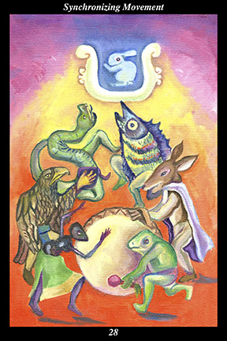

 | IMAGEA diverse group of animals sing and dance and drum to the same rhythm. Above them shines the moon, which is shown as a water jar within which a rabbit crouches. |
INTERPRETATION
This hexagram depicts the dance of renewal. The diverse group of animals means that you do not exclude any from your sphere of activity. Singing, dancing, and drumming to the same rhythm means that you work for the harmonious coordination of all involved. As a symbol of the womb and fertility, the moon overhead means that you attune yourself to the naturally repeating cycle of renewal that governs all things. Taken together, these symbols mean that in a time of transition, differences must be set aside in order to achieve the kind of coordinated effort it takes to succeed.
ACTION
As surely as the tides rise and fall, change overtakes us all. As things move toward one ending, they begin to shift toward another beginning. While everyone seems to be carried along by the same current of events, they do not all respond in the same way: some compete, some cooperate, some withdraw, some lead. In order to thrive in such a climate, you need to form as broad an alliance as possible by joining forces with others regardless of past conflicts, distrust, or lack of familiarity. In this regard, past conflicts can be seen as the sparring by which you have trained each other in preparation for this greater test. Now is the time to prepare for the coming hardships that accompany periods of transition. Approach those who are resourceful and strong-willed, bridging differences by working toward goals that reflect your common interests. Increasingly integrate your efforts, concentrating on improving effectiveness, versatility, and mobility. Once it has a solid and proven foundation, open your alliance to others by accentuating the way in which the relationship would be mutually beneficial. It is essential to emphasize mutual respect among all concerned, demonstrating it by learning from new allies and integrating their methods into the overall strategy of the alliance as a whole. By continuing to expand your alliance in this way, you take part in a growing, organic, response to events that succeeds because it does not lose its adaptability.
INTENT
The eternally-recurring cycle of renewal moves at its own pace. It has its own rhythm and if we hope for our endeavors to succeed then we must time our actions to accord with the movement of the creative forces. Just as the tides fall into step with the phases of the moon, plants fall into step with the seasons, and dancers fall into step with the music, successful endeavors fall into step with the rising and falling energies of opportunity: just as the seeds we plant next spring come from the harvest we store this winter, we will not position ourselves for the next period of advance if we enter this period of decline unprepared. Most people lack the agility to take advantage of opportunities during a period of new beginnings because they lacked the insight, discipline, and humility to keep time with the prior period of endings: because you recognize that strong, flexible, mutually-beneficial relationships are your greatest resource, however, you spend the winter setting the stage for next spring’s sowing.
SUMMARY
You are attuned to the underlying harmony of the unseen forces. You have grown accustomed to the waxing and waning of the seasons and know how to recognize periods of advance and decline before they arrive. Without calling attention to yourself, try to help those around you succeed in good times and bad. By working for the success of others, you do not lose touch with the real.
THE LINE CHANGES
1° Take up the new form of self-discipline you have been considering, incorporating it into your regimen. Increasing your strength, flexibility, and endurance will make you feel better prepared for the challenge ahead. Link your physical training to your spiritual practice.
2° The window of opportunity opens—you can change things for the better now. Having gained the trust and confidence of a superior, do not betray it by overstepping your bounds or failing to fulfill your responsibilities. Keep your focus on the plan and avoid personality conflicts.
3° When mean-spirited people are set in charge, they value money over ethics. This bodes ill because it means they have the support of those above. If you remain loyal to such people you will share their fate—approach others outside the situation who may be able to exert pressure for the better.
4° When your opponent adapts to your strategy and counters with a brilliant move, do not blunder ahead with your plan. Recognize when you have been outflanked and withdraw before you suffer real loss. Pretend greater weakness than you have, buying time to prepare your next move.
5° When a former ally betrays your trust and breaks the conditions of a long-standing agreement, you have no choice but to fulfill your duties and protect those in your charge. Someone experienced and ready to retire will make the best leader. Don’t give young ambitious people the lead position.
6° You prevail after much strife and bad blood—the bitterness will stand in the way of reconciliation for a long time to come. Do not let your guard down now—every effort will be made to undermine the terms of the new treaty. The victors want to forget it all quickly, the losers can never forget.